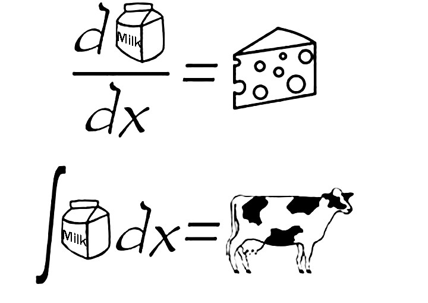

Get to know Photoshop

Photoshop Tutorial: Chapter 1, April 2, 2020
Step 1:
Open images
- In the menu bar, choose File > Open to open existing images.
- In the menu bar, choose File > New to create a new image from scratch. Select a document preset. You can customize the preset by typing in your own values, like width and height.
Step 2:
Get familiar with the work area
- Menu bar (at the very top) shows the File, Edit, Image, and other menus that give you access to a variety of comma nds, adjustments, and panels.
- Options bar (underneath the menu bar) displays options for the tool you are currently working with.
- Tools panel (on the left) contains tools for editing images and creating artwork. Similar tools are grouped together. You can access related tools in a group by clicking and holding a tool in the panel.
- Panels (on the right) include Color, Layers, Properties, and other panels that contain a variety of controls for working with images. You can find the full list of panels under the Window menu.
- Document window (in the middle) displays the file you’re currently working on. Multiple open documents show up in tabs in the Document window.
- Close image: Choose File > Close.
Step 3:
Learn how to zoom and pan
- The Zoom tool is located in the Tools panel. Change from Zoom In to Zoom Out in the options bar.
- The Hand tool, also located in the Tools panel, allows you to pan around a large or zoomed-in image.
Step 4:
Undo a command
- To undo the last thing you did, choose Edit > Undo or press Control+Z (Windows) or Command+Z (macOS).
- To redo the last thing you did, choose Edit > Redo or again press Control+Z (Windows) or Command+Z (macOS).
- To undo multiple steps, choose Edit > Step Backward multiple times, or select a step in the History panel.
Step 5:
Save your work
- Choose File > Save or File > Save As.
- Saving in Photoshop format (.psd) will retain layers, type, and other editable Photoshop properties. It’s best to save your image in PSD format while you’re still working on it.
- Saving in JPEG (.jpg) or PNG (.png) format will save as a standard image file that can be shared, opened by other programs, and posted online. When you’re finished editing, save a copy in one of these formats too.
Popular Posts
-
 My maya 3d model keeps on freezing. Help!!!
My maya 3d model keeps on freezing. Help!!!
I don't know what's happening with my project but every time I try to extrude a vertex, the whole program freezes. -
 BST Problem
BST Problem
My Binary Search Tree code keeps giving me random nodes as an output. What could it be?? -

I don't know how to derive
I'm doing Integrals but I forgot how to solve derivatives. Tips?
Tags
Travel New York London IKEA NORWAY DIY